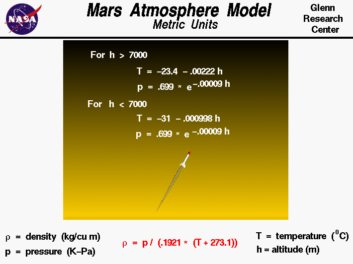

|

The Martian atmosphere is an extremely thin sheet
of gas,
principally carbon dioxide, that extends from the surface of
Mars to the edge of space. The Martian atmosphere is less dense than the
Earth's
atmosphere, but there are many
similarities.
Gravity
holds the atmosphere to the Martian surface and
within the atmosphere, very complex chemical,
thermodynamic,
and fluid dynamics effects occur. The
atmosphere is not uniform; fluid properties are constantly changing
with time and place, producing weather on Mars just like on Earth.
Variations in atmospheric properties extend upward from the
surface of Mars. The sun
heats
the surface and some of this heat goes into warming the gas
near the surface. The heated gas is then diffused
or convected up through the atmosphere.
Thus, the gas temperature
is highest near the surface and decreases as we increase
altitude.
The speed of sound
depends on the temperature and also decreases with increasing altitude.
As with the Earth, the pressure
in the atmosphere decreases with altitude.
The density
of the atmosphere depends on both the temperature and the pressure
through the equation
of state
and also decreases with increasing altitude.
Aerodynamic forces
directly depend on
the gas density. To help spacecraft designers, it is useful to define a
mathematical model of the atmosphere to capture the effects of
altitude. The model shown here was developed from measurements of the
Martian atmosphere made by the Mars Global Surveyor in April 1996.
The information on the Martian atmosphere was gathered by Jonathon
Donadee of Canfield (Ohio) Middle School during a cyber-mentoring
program in 1999. The data was curve fit to produce equations by Dave
Hiltner of St. John's Jesuit High School as part of a shadowing
program in May 1999. The curve fits are given for metric units. These
curve fits are also available in English
units.
The model has two zones with separate curve fits
for the lower atmosphere and the upper atmosphere.
The lower atmosphere runs from the surface of Mars to 7,000 meters.
In the lower atmosphere, the temperature decreases linearly and the pressure
decreases exponentially. The rate of temperature decrease is called the
lapse rate. For the temperature T and the pressure p,
the metric units curve fits for the lower atmosphere are:
T = -31 - 0.000998 * h
p = .699 * exp(-0.00009 * h)
where the temperature is given in Celsius degrees, the pressure in kilo-Pascals,and h is the altitude in meters.
The upper stratosphere model is used for altitudes above 7,000 meters.
In the upper atmosphere the temperature decreases linearly and the pressure
decreases exponentially.
The metric units curve fits for the upper atmosphere are:
T = -23.4 - 0.00222 * h
p = .699 * exp(-0.00009 * h)
In each zone the
density r is derived from the
equation of state.
r = p / [.1921 * (T + 273.1)]
This is the atmosphere model used in the
FoilSim
simulator. The model is also used in the
interactive atmosphere simulation
program. With the
applet, you can change altitude and see the effects on pressure and
temperature.
You can also compare the Martian atmosphere to the
atmosphere on Earth.
Activities:


Guided Tours
-
 Interactive Atmosphere Model:
Interactive Atmosphere Model:
Navigation ..


- Beginner's Guide Home Page
|